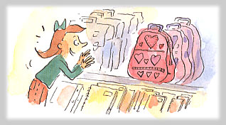
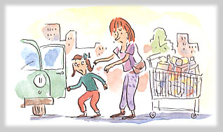
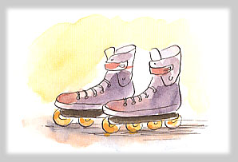

あたらしいリュックサック
毎週、土曜日になると、うんざり。ショッピング・センター「メガ・ストア」に買いものにいく。
かんづめがダンボールばこにどっさり、山のようなトイレットペーパー、うんざりするほどのパスタ……。「ぜーんぶカートにつっこんで、なにがたのしいのよ」サラは、家にかえるとちゅう、車の中でぶつぶついっている。
とくに今日は、いつもにもまして、さんざんだったの！
サラは、出かけるまえに「あたらしいリュックサック買っていい？」ときいた。
お母さんは、いそがしそうに「そうねぇ……」としかいわなかった。
「そうねぇ」というのは、買っていいよという意味だとサラは思った。だからこそ、今日は大きなショッピング・センターの中であっちの階、こっちの階とつれまわされても、「足がいたい」とも「もう、テレビはじまっちゃうよ」ともいわずにがまんしたのだ。
そして、ようやく学用品売りばにやってきた。わーい。あったあった。これが、ほしかったリュックサック。ピンク色でハート型のポケットがついてるの！

ところが、わくわくしながら、買いものカートにいれたとたん、お父さんにとめられた。
「売りばにもどしなさい！」
「どうして？ これ、いるんだもん。必要なの！」
「あたらしいリュックが必要ですって？ 去年買ってあげたのがあるじゃない」
「だって、お母さん。あのアップル・グリーンのは、パジャマのクマさんがついていて子どもっぽいんだもの。わたし、もう大きいんだから、あんなのはずかしい！」
「でも、あれがほしい、あれでなきゃいやって大さわぎしたのはあなたでしょう？」
「そんなのずっとまえのことじゃない……」
「サラ！ おまえは、あたらしいのがほしいだけだろう。どうしても必要だなんていいかたをするのはやめなさい」
サラは、大声で泣いた。おねがいした。おこった。でも、どうしようもない。
お母さんは、サラの手をぐいぐいひっぱって車にもどった。シートベルトにしばりつけられても、サラはシートにみをしずめて泣きつづけた。

月曜日、学校にいったら、また、あのかばんのことでステファンにからかわれるんだ。ひどい！ お父さんとお母さんのせいだ！
「じゃぁ、こんどのおたんじょうびに、あのリュックサックを買ってあげる」
お母さんの声がさっきよりやさしくなった。
「あと１か月もしないうちにたんじょうびじゃないか、なっ」
バック・ミラーにうつったお父さんの目がウィンクする。
「たんじょうび？ たんじょうびには、インラインスケートがほしいの！ ジョエルおじさんと夏休にあそぶんだから。どうしても必要なの！」
